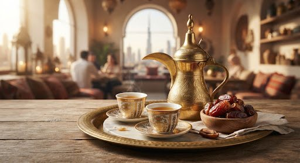
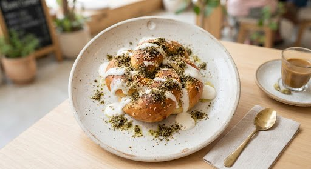

Khaleeji Hospitality
Ahlan wa sahlan is not a phrase we recite — it is how we host. Expect cardamom, dates, and unhurried conversation.
Bunn Corner brings the warmth of the Arabic coffee greeting to a sunlit villa on Al Wasl Road — and roasts every bean with the precision of the world’s finest specialty labs.


In Arabic culture, the greeting of Ahlan wa Sahlan has always centered on the warmth of fresh coffee and green cardamom. At Bunn Corner, we honor this ancestral hospitality while elevating bean provenance to the highest international specialty standard.
We source directly from family-run washing stations in Yemen, Ethiopia, and Colombia, roasting small batches in our Jumeirah lab. Every profile is built to let floral terroir and delicate regional sweetness shine — never buried under dark roast bitterness.
The room completes the ritual: double arches, tactile oak, and quiet corners designed for deliberate pause. Whether you come for a 60-second pickup or an unhurried afternoon, you are a guest in our home.

87.5+
Average SCA cupping score
14
Days maximum roast-to-cup window
4
Micro origins on the bar daily
0%
Artificial syrups or powders
Ahlan wa sahlan is not a phrase we recite — it is how we host. Expect cardamom, dates, and unhurried conversation.
Every lot is named, scored, and sourced directly from family-run washing stations in Yemen, Ethiopia, and Colombia.
Small batches roasted in our Jumeirah lab, profiled so floral terroir and regional sweetness lead the cup.
Sunlit double arches, tactile oak, and calm corners designed for deliberate, screen-free pause.
The best way to understand Bunn Corner is to sit with us for a while. Bring a book, bring a friend, or bring your curiosity about regional coffee.
Bunn Corner represents the contemporary Dubai we love: unapologetically rooted in our culture, executed with world-class restraint.